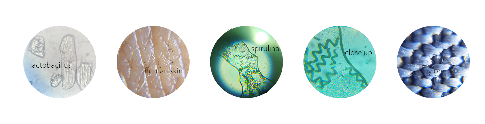
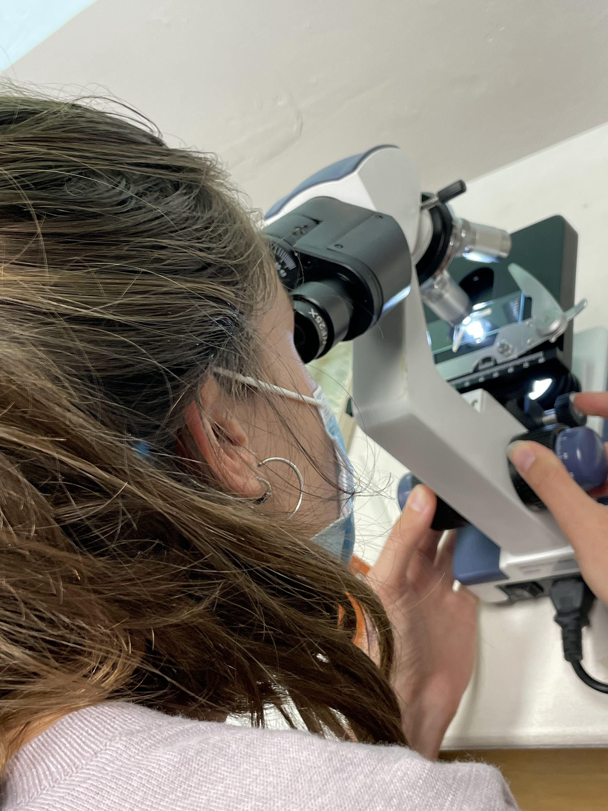
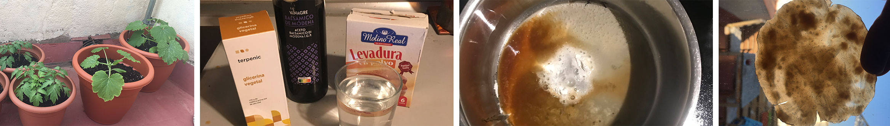

term 1
bio&angri Zero
microscope
The first week was about biology and chemistry. We received a big amount of information and have done different studies and tests. With various of microscopes we learned how to use them and how to find the bacteria, which you can see in the round pictures. Sometimes it took a while to locate them. Also we create a medium or bioplastic (sugar, distilled water, yeast and vinegar) where each student distribute two different swaps of bacteria’s, which we could find at IAAC. First we mixed the ingredients together and then we sterilised our containers with the mixtures inside. Then we filled them into petri bowls and let and heat them with a gas burner and let them cool down. In the next day we swipe the two chosen bacteria on the medium. First I wanted to check our water filter tank at IAAC to see how many bacterias there are, because we use it everyday and nobody is cleaning their bottles before. For the second part I choose my banana skin to see how bio-materials produce bacteria. Then we put our petri bowls into an incubator which shows 36 degrees.
We should think about which type of smear produces more bacteria: “I would imagine that there are the same amount of bacteria, because bacteria do not last as long on plastic as they do on natural surfaces. The samples were taken in the morning after some people had already filled up their bottle. The plastic surface is hard and not porous, so the bacteria don't stay as long.” And I was right, maybe also because IAAC disinfected the water tank in the morning, we don’t know.
kambusha
We started to make our own Kombusha-drink. Therefore Nuria (our teacher for the week) gives everybody of us a part of her scooby, which she made by letting her bought Kambucha “grow”. Our own little scooby we put in a box and add strong concentrated black tee. We took it home and let the lid open. Unfortunately my scoopy got infected because I didn’t put something on the pot so all the bad bacterias went inside.
spirulina
Also they showed us to create our own Spirulina, which should be really healthy because it includes various of vitamins for the health of your body. Spirulina is a cyanobacterium, which includes plant compounds, copper, iron, manganese, potassium, B vitamins and iodine.
experiments
I have done two experiments. First on I bought different kind of vegetables seeds and planted them on our balcony to see the different between BIO and non-BIO seeds and if its possible to grow them in autumn in Spain. I realised that BIO seeds grow much better. Compared to non-BIO seeds, almost out of every seed came a small plant.
My second experiment was to produce my own homemade bioplastic. Therefore I bought vinegar, yeast, filtered water without chlorine and glycerine. It worked quite well! First I mixed everything together and already at the beginning I could see that the mixture reacts. I cooked it and after a few minutes the mixture got more sticky. Then I distribute the mixture on a backing paper and let it try for a couple of hours. In the end i realised its quiet easy to produce your own bioplastic at home, you just need to know what texture you want. My bioplastic was very flexible.
personal
This week i reflect how I live here in Barcelona. Our flat in the district “Gotic” is at the top of the building, that’s why the walls are low. The flat is quiet small, but we have a private rooftop which is much bigger that the flat itself. That’s the reason why I am the most of the time outside. It feels like living in a tiny house. I recognized that In my freetime I spend less time being at my phone or watching tv, because of the small flat I always want to be outside and outside you can not really good see the display. Because of the different social media areas where are spending much time in fake digital worlds, which are far away from the origin of the mother earth. In this week I learned that its important also to explore what plants and animals are “designing” and copy it. On the terrace I growed a lot different kind of vegetables (with BIO-seeds from Barcelona), read and build furniture and do sport exercises. Because of the climate in spain the vegetables grow much faster than in Germany. Here I can not have a bike that’s why I walk everywhere I need to go and explore the city and surroundings even more. I recognised in Barcelona are not many parcs, gardens (like urban gardens) or grass-areas. You feel not very connected to the nature. In this week we also learned that blockchain and different kind of digital activities need a lot of energy which is not good for the environment., but still less than other areas. Sustainabilty is often treated in richer countries as they have "no" other concerns but they also have the biggest negative impact on global warming. Also this week I realised that racism is still everywhere and plentiful, it doesn’t matter which country you are.
personal laboratory

18.10.2021
personal
text fehlt